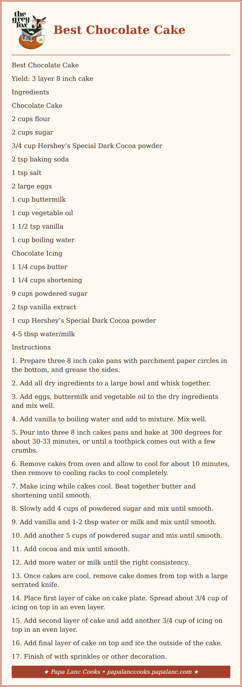

WELCOME
Best Chocolate Cake
Yield: 3 layer 8 inch cake
Ingredients
Chocolate Cake
2 cups flour
2 cups sugar
3/4 cup Hershey’s Special Dark Cocoa powder
2 tsp baking soda
1 tsp salt
2 large eggs
1 cup buttermilk
1 cup vegetable oil
1 1/2 tsp vanilla
1 cup boiling water
Chocolate Icing
1 1/4 cups butter
1 1/4 cups shortening
9 cups powdered sugar
2 tsp vanilla extract
1 cup Hershey’s Special Dark Cocoa powder
4-5 tbsp water/milk
Instructions
1. Prepare three 8 inch cake pans with parchment paper circles in the bottom, and grease the sides.
2. Add all dry ingredients to a large bowl and whisk together.
3. Add eggs, buttermilk and vegetable oil to the dry ingredients and mix well.
4. Add vanilla to boiling water and add to mixture. Mix well.
5. Pour into three 8 inch cakes pans and bake at 300 degrees for about 30-33 minutes, or until a toothpick comes out with a few crumbs.
6. Remove cakes from oven and allow to cool for about 10 minutes, then remove to cooling racks to cool completely.
7. Make icing while cakes cool. Beat together butter and shortening until smooth.
8. Slowly add 4 cups of powdered sugar and mix until smooth.
9. Add vanilla and 1-2 tbsp water or milk and mix until smooth.
10. Add another 5 cups of powdered sugar and mix until smooth.
11. Add cocoa and mix until smooth.
12. Add more water or milk until the right consistency.
13. Once cakes are cool, remove cake domes from top with a large serrated knife.
14. Place first layer of cake on cake plate. Spread about 3/4 cup of icing on top in an even layer.
15. Add second layer of cake and add another 3/4 cup of icing on top in an even layer.
16. Add final layer of cake on top and ice the outside of the cake.
17. Finish of with sprinkles or other decoration.

WELCOME
Converted from the original file for viewing — open/download the original to edit it.